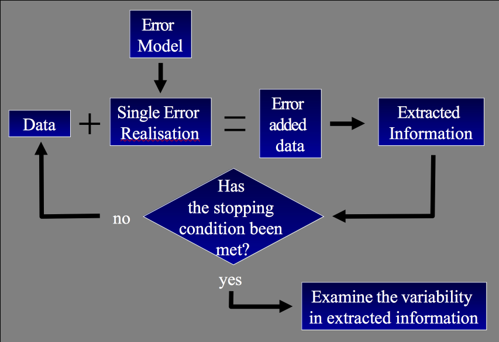
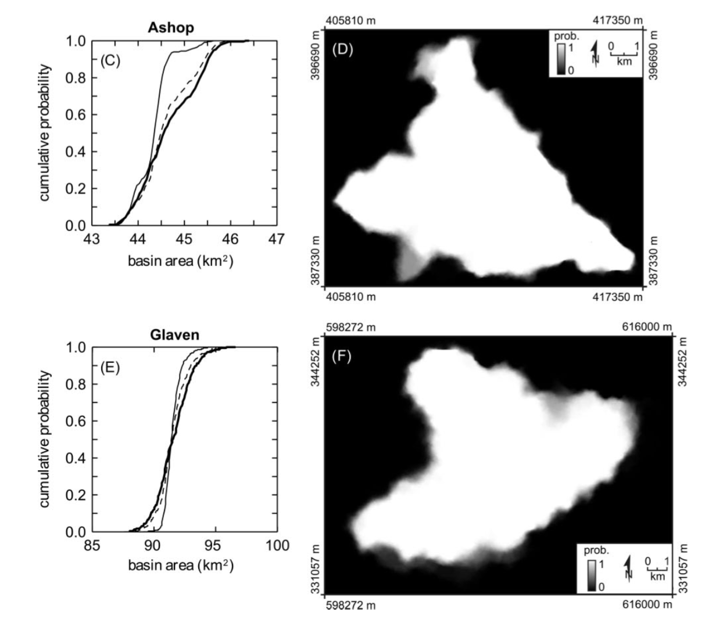
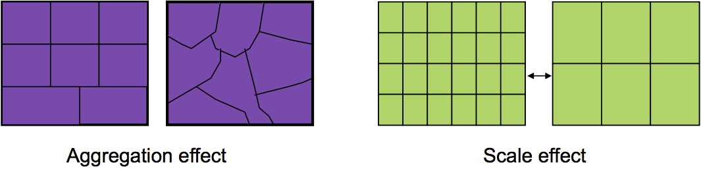

GEOG*3480
GIS and Spatial Analysis
Data Quality Part 2
John Lindsay
Fall 2015
Error Propagation
- When there is error in a spatial data layer and we combine it with other layers
as part of a GIS analysis workflow, the result will reflect the inaccuracies of the
lowest-quality input.
- Error propagates in a workflow in very complex ways that can be difficult to model analytically.
- The Monte-Carlo method (stochastic simulation) is commonly used to study error.
Stochastic Simulation

Error Propagation

Lindsay and Evans (2010) Monte-Carlo based simulation of how DEM
error propagates into uncertainty in mapped watersheds.
Spatially Aggregated Data
- Many geographic data are aggregates of data at a more detailed level:
- National census: collected at the household level but reported for practical and privacy reasons at various levels of aggregation (block, neighbourhood, postcode, county, province, etc.)
- Traffic Analysis Zone (TAZ)
- School district
- Watersheds
- Pixels
Ecological Fallacy
- The Ecological Fallacy is a situation that can occur when a researcher or analyst makes an
inference about an individual based on aggregate data for a group.
- The conclusions we draw from a GIS analysis of spatially aggregated
data only apply at the scale of the aggregation
Ecological Fallacy
- Example: we might observe a strong relationship between income and crime at the county level,
with lower-income areas being associated with higher crime rate.
- Conclusion
- Lower-income persons are more likely to commit crime
- Lower-income areas are associated with higher crime rates
- Lower-income counties tend to experience higher crime rates
The Modifiable Areal Unit Problem (MAUP)
- "A problem arising from the imposition of artificial units of spatial reporting on
continuous geographic phenomena resulting in the generation of artificial
spatial patterns."
- That is, it involves data that are spatially aggregated using arbitrary boundaries
and affects our ability to quantify apparent relations, statistical or otherwise.
The Modifiable Areal Unit Problem (MAUP)
- In a series of publications in the 1970s Stan Openshaw demonstrated that by changing
the aggregation characteristics of spatial data, it is possible to measure correlations
between -1.0 and 1.0!
- The MAUP has two manifestations:
- the aggregation effect
- the scale effect
The Modifiable Areal Unit Problem (MAUP)

These are potential problems in almost every field that utilizes spatial data
MAUP Example: Electoral Districts & Voting
- It's not just who you vote for but also where you vote that counts.
- In the 2000 U.S. presidential election, Al Gore, won more of the popular
vote than George Bush, but failed to become president.
- A different aggregation of U.S. counties into states could have produced a
different outcome (switching just one northern Florida county to Georgia or
Alabama would have produced a different outcome).
Gerrymandering
- The practice of setting electoral district boundaries to favour a particular outcome.
- We have to be very careful whenever we modify the geographic boundaries of
voting aggregation areas.
- Gerrymandering is commonplace in many countries, sometimes even legal!